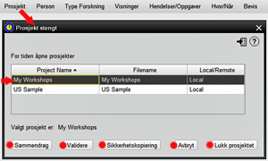

Dette alternativet lar deg lukke et prosjekt som for øyeblikket er åpent i HRE. 1. For å lukke et for øyeblikket åpent prosjekt, velg PROJEKT fra menyen, og velg deretter alternativet LUKK PROJEKT 2. Listen over åpne prosjekter vises, og viser prosjektnavn, filnavn og om det er et lokalt prosjekt eller et på en server 3. Fremhev navnet på prosjektet du vil lukke. I illustrasjonen er 'My Workshop' Project valgt fra de nåværende åpne prosjektene. Hvis det bare er ett åpent prosjekt, er det valgt som standard 4. Når du markerer ønsket prosjekt, vises navnet nedenfor for å aktivere kontroll 5. Merk at det valgte prosjektet på dette tidspunktet også kan bli utsatt for andre prosesser, inkludert SAMMENDRAG, VALIDER eller SIKKERHETSKOPIERING, og det er et alternativ for å AVBRYTE nedleggelsen 6. Hvis du deretter velger LUKK PROSJEKT og bekrefter avgjørelsen, vil prosjektet lukkes (det vil ikke være noen bekreftelsesvarsel hvis det alternativet ble valgt i INNSTILLINGER). HRE forblir åpent slik at et annet prosjekt kan åpnes hvis ønskelig 7. Hvis det lukkede prosjektet for øyeblikket var det aktive prosjektet, kan du velge å gjøre et annet prosjekt aktivt. |
|
Relaterte Temaer |